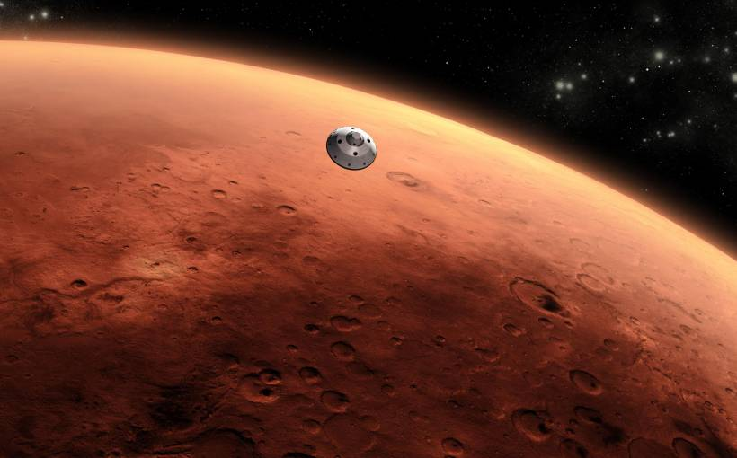
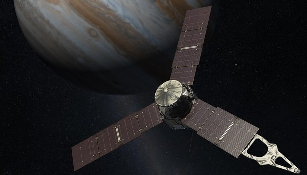
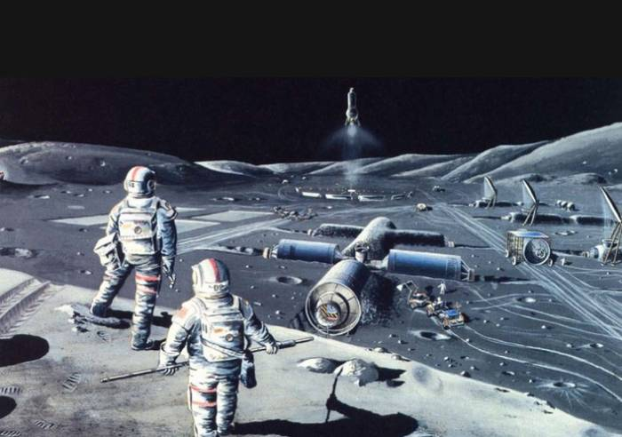

Китай планирует отправить в 2020 году марсоход на Красную планету

Согласно плану, в 2020 году Китай отправит на Марс свой марсоход, который начнет свою работу на поверхности Красной планеты в 2021 году.
Точные детали китайской марсианской миссии пока не были озвучены, хотя,
согласно некоторым данным, марсоход будет исследовать грунт Марса, его атмосферу, окружающую среду, а так же заняться поиском воды.
В пятницу, выступая на пресс-конференции в Пекине, глава Государственного космического управления Китая Сюй Дачжэ подчеркнул, что новая
марсианская миссия представляет собой «гигантский скачок» для космического потенциала Китая.
Стоит отметить, что Китай вкладывает миллиарды юаней в свою космическую программу и пытается догнать в этой «космической гонке» таких гигантов,
как Россия, США и Европа. Уже есть успехи в создание собственной космической станции, китайский луноход «Юйту» проехал по поверхности нашего
естественного спутника, а в 2018 году планируется высадка человека на обратной стороне Луны. Однако в исследование Марса даже Индия обогнала
Китай, отправив на его орбиту недорогой исследовательский зонд «Мангальян», поэтому марсианская миссия является необходимым условием для поддержания Китаем имиджа космической державы.
Космический аппарат «Juno» совершил корректировку траектории полета

«З февраля 2016 года, специалисты миссии успешно провели первую из двух коррекций траектории движения «Juno» вокруг Солнца. Это в конечном итоге выведет аппарат к Юпитеру 4 июля нынешнего года,
в 23 часа 18 минут по времени восточного побережья США (7.18 мск, 5 июля)», - пишут специалисты миссии. Следущая коррекция полета запланирована на 31 мая.
Напомним, что межпланетная станция NASA «Juno» стартовала 5 августа 2011 года с космодрома на мысе Канаверал. На орбиту аппарат, масса которого составляет 3,6 тонны, вывела ракета-носитель Atlas V.
Аппарат станет первым зондом, обращающимся вокруг Юпитера на высокой эллиптической орбите. Камеры и спектрографы «Juno»
будут способны работать в нескольких диапазонах: ультрафиолетового, видимого света и инфракрасного излучения, что позволит
ученым не только получать высококачественные снимки Юпитера, но и анализировать химический состав его атмосферы. Установленные
на аппарате различные научные приборы помогут ученым собрать информацию о формировании газового гиганта, внутреннем строении планеты, а также узнать,
почему у Юпитера есть магнитное поле. Кроме того, аппарат займется поиском и оценкой количества воды в атмосфере Юпитера.
В 2029 году российские космонавты полетят на Луну

На прошедшей конференции по космическим технологиям об этом рассказал глава Ракетно-космической корпорации «Энергия» Владимир Солнцев, сообщает информационное агентство
lenta.ru.
«В 2029 году состоится полет человека к Луне и высадка на нее», - заявил глава РКК «Энергия» Владимир Солнцев. Кроме того он добавил, что на 2021 год запланировано начало
полетов на новом лунном корабле, в 2023 году — запуск и стыковка этого корабля с МКС. На 2025 год намечен автоматический беспилотный полет к спутнику Земли и отработка
соответствующих технологий.
Согласно концепции лунного проекта, лунный взлетно-посадочный комплекс обеспечит доставку экипажа из четырех человек с окололунной орбиты в заданный район на поверхности
Луны, а также подьём с поверхности спутника на окололунную орбиту. Длительность экспедиции на Луне составит не менее 14 суток.